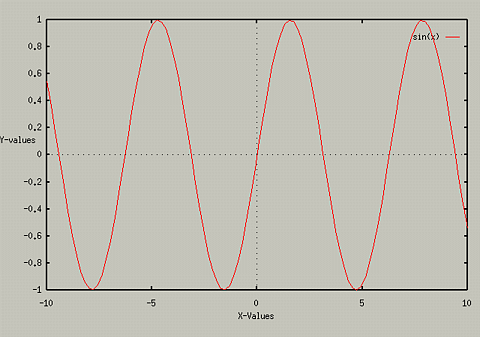
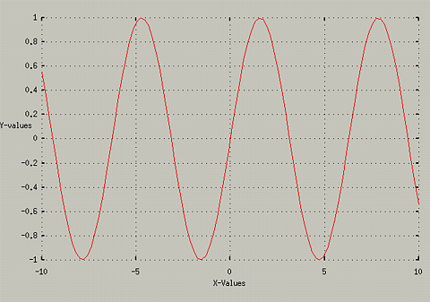
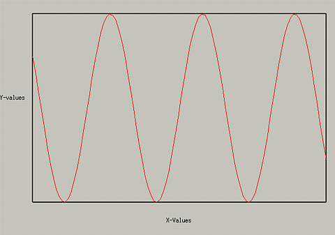
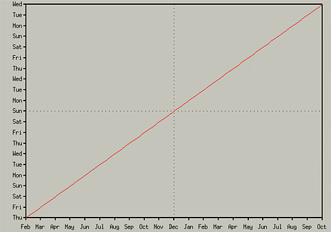

Changing Axis Labels
If you want to add Labels to your axis, to describe them, you can use
the commands :
- set xlabel "string"
- set ylabel "string"
- set zlabel "string"
Note that the ylabel string in 2D plots will appear at the top left
corner of the screen, using a Graphic view. However, it will be
vertically placed in a postscript plot. If you want to move the label,
you can use the following offsets after the ylabel graph:
- set ylabel "Y-Values" 0,-10
These will add labels of the string you specify to the graph. For
instance, typing the following:
- set xlabel "X-Values"
- set ylabel "Y-Values" 0, -10
- plot sin(x)
will produce the graph

Labels work the same in 3D plots, where the zlabel is used as well. To turn off the labels, Just use the set xlabel with no arguements.
Displaying Zero Axises...
You can turn off the dashed lines that represent the x=0 and
y=0 lines in 2D plots. To turn them off, use one of the
following:
- set nozeroaxis Turns off both x and y
- set noxzeroaxis Turns off just x
- set yzeroaxis Turns on y
- set zeroaxis Turns on both x and y
For example, if you typed the following:
You would get :
Turning off Border and Graph Key
Command relating to border -
- set noborder - Turns off drawing of border
- set border - Turns on drawing of border
You can also turn off the display of the function names in the upper
right hand corner. Related commands -
For example:
- set noborder
- set grid
- set nokey
- replot
produces the following:

Changing "Tic" Marks on the Borders...
You can turn off the markings on the axis by using one of the commands
like set noxtics. For instance, typing the following:
- set noxtics
- set border
- set noytics
- replot
produces the following graph:

To turn the tics back on, use set xtics or set ytics.
You can also make the Tics marks correspond to Days of the week (i.e.,
set xdtics, or months (i.e., set xmtics). For instance,
typing the following:
- set xdtics
- set ymtics
- plot x
Produces the following:

Ticslevel
One final thing, with splots, you may have noticed that the graph is
always raised above the base. If you want to lower it, see help set
ticslevel.
Table of Contents -
Changing Variables Used
Next - Changing the General Appearance of Graphs
College of Natural Sciences /
University of Northern Iowa /
manager@cns.uni.edu
Copyright © 1996 College of Natural Sciences. All Rights Reserved.
Last Modified: 10/31/96